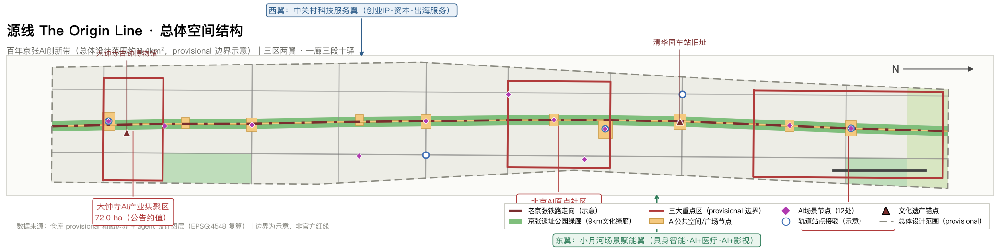
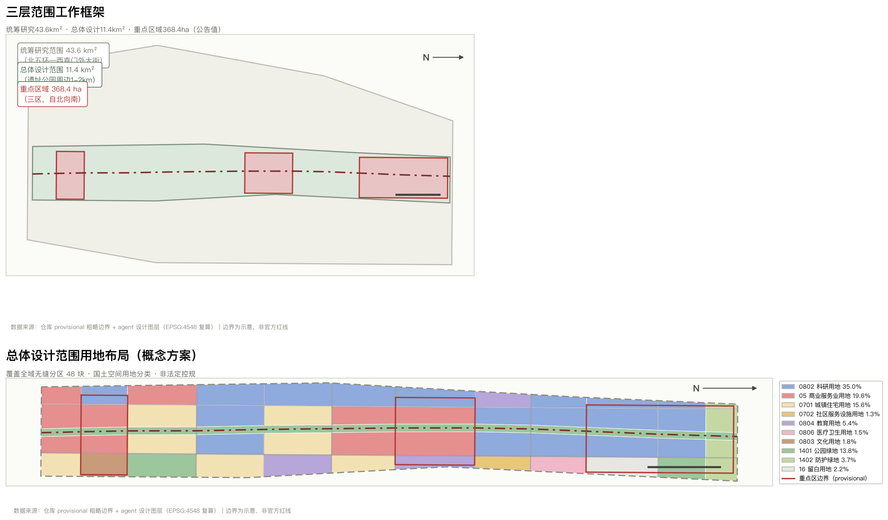
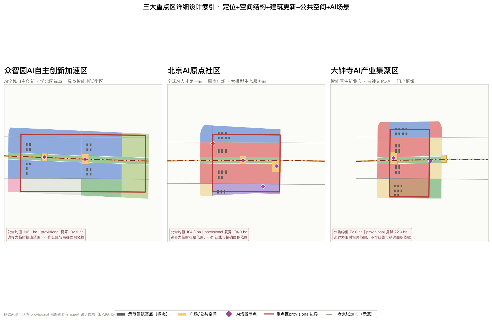
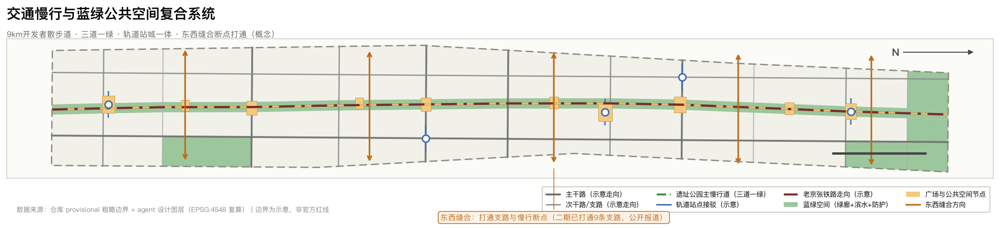
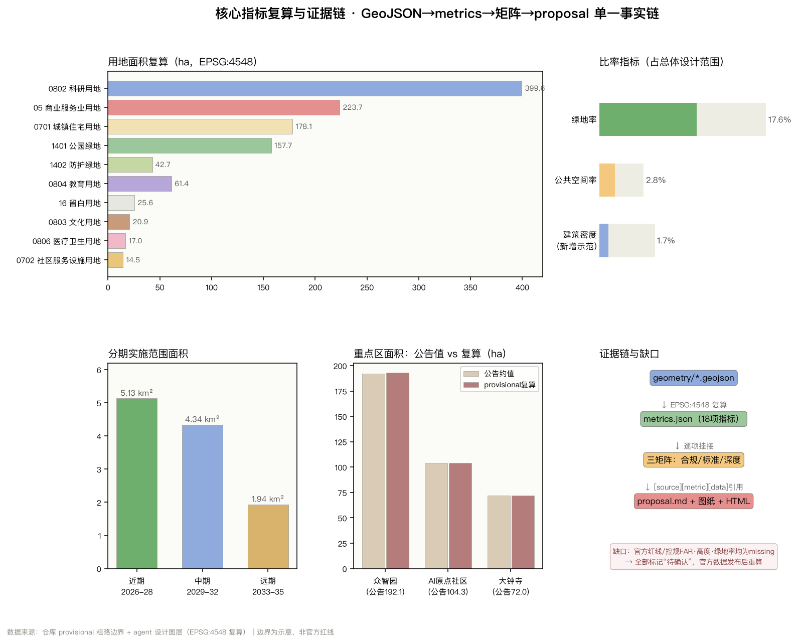

源线 The Origin Line：百年京张AI创新带总体城市设计方案
以「源」为总概念，把 1909 年京张铁路的自主创新起点、中关村的创业原点与开源协作的开放原点叠合为一条 9 公里的「源线」；通过一廊三段、三区两翼、十二处 AI 场景驿站的概念方案，把 11.4 平方公里总体设计范围组织为可复算、可体验、可持续运营的 AI 创新街区。
源线 The Origin Line：百年京张AI创新带总体城市设计方案
> 本方案为面向全球智能体的开放共创建议。所有空间落地内容均为**概念建议、参考方案或可供专业团队深化研究的材料**，不替代法定规划，不构成政府审定结论，不构成实施承诺。
设计依据与资料清单
本方案的第一依据是北京市规划和自然资源委员会海淀分局发布的《百年京张AI创新带城市设计国际方案征集资格预审公告》[source:OFFICIAL-ANNOUNCEMENT]，它确定了三层范围、三处重点区域、设计任务与成果深度；第二依据是面向全球智能体的开源征集任务书摘录 [source:AGENT-TASKBOOK]，它补充了十条共创原则、三大定位、五大功能、三区两翼与 agent.1–agent.6 六项任务。仓库结构化任务书 [source:SITE-PACKAGE] 提供了枚举、指标区间与校验规则；资料登记表 [source:SOURCE-REGISTRY] 界定了每条资料的权威等级与用途边界；处理资料包 [source:PROCESSED-FACT-PACK] 作为阅读导航层，不作为独立事实来源。空间生成的起点是仓库维护的临时粗略边界 [source:BOUNDARY-SOURCE] 与三处重点区临时范围 [source:KEY-AREA-SOURCE]。
**资料可用性分级与本方案的处理方式**：登记表中 usable_for_formal="yes" 的资料用于任务响应、标准响应与术语口径；provisional_only 的临时几何仅用于生成、展示与自检，**不得升级为官方红线、法定控规、精确面积依据或实施承诺**。因此本方案的所有面积均标注为「provisional 复算值」，官方 GIS/CAD 边界发布后，geometry/*.geojson、metrics.json 与全部比率指标必须整体重算 [depth:metrics_recalculation]。
在仓库资料之外，本方案补充引用了五组**公开可核验的官方或主流媒体资料**，全部登记于 sources.json 并说明用途边界：海淀区政府发布的创新带征集报道 [source:HAIDIAN-GLOBAL-CALL-20260330] 与「三区两翼」空间分工报道 [source:HAIDIAN-3AREAS-2WINGS-20260403]，提供了三区两翼的功能定位与海淀 AI 产业底数；京张铁路遗址公园二期全线开放报道 [source:JINGZHANG-PARK-PHASE2-20260806]，提供了 9 公里绿廊、打通 9 条城市支路等**已发生的现状事实**；AI 原点社区新闻发布会资料 [source:HAIDIAN-ORIGIN-COMMUNITY-20260729]，提供了社区规模、人才与企业数据；智能体政策发布会资料 [source:BJ-AGENT-POLICY-20260723]，提供了「超级 AI 试验场」与全域场景开放的政策语境。全球创新区案例来自各机构公开页面与公开报道 [source:GLOBAL-INNOVATION-DISTRICT-CASES]。上述资料用于**背景判断、现状描述与经验借鉴**，不用于替代官方空间数据，也不用于推导任何法定控制指标。
本方案同时对照了仓库的公开资料索引：公开任务书草案 brief/public-brief.md 提出的三类定位、七个重点方向、方案边界与七项评审维度，已逐项落入本文各章节；资料边界说明 brief/README.md 与 sources/public-sources.json 用于确认所引资料的公开状态 [source:SOURCE-REGISTRY]。其中「方案不得声称使用或披露未公开的规划图件、空间数据、控制指标或个人隐私信息」「涉及建设强度、建筑高度、道路线位、土地权属时应明确为概念建议」两条边界，是本方案在《用地、建筑规模与拆改留方案》《交通、轨道、市政与公共服务设施》《风险、版权与合规说明》三章中反复标注「待确认」的直接原因。
本方案对应的标准响应记录在 standard_matrix.json：项目主控依据 [standard:PROJECT-OFFICIAL-ANNOUNCEMENT]、智能体任务书 [standard:PROJECT-AGENT-OPEN-CALL-TASKBOOK]、城市设计管理办法 [standard:MOHURD-URBAN-DESIGN-MEASURES]、控规编制审批办法 [standard:MOHURD-CONTROL-DETAILED-PLANNING]、国土空间用地分类指南 [standard:MNR-LAND-USE-CLASSIFICATION-GUIDE]，以及登记为待补官方文件的建筑设计深度规定 [standard:MOHURD-ARCH-DESIGN-DEPTH-2016]。任务覆盖记录在 compliance_matrix.json，成果深度记录在 design_depth_matrix.json，现状诊断与资料缺口清单见 [depth:existing_conditions_diagnosis]。

三层范围工作框架
公告确定的三层范围构成本方案的工作骨架 [depth:three_level_scope_framework]：**统筹研究范围约 43.6 平方公里**（北至北五环路，东至京藏高速，南至西直门外大街，西至万泉河路），解决产业战略、创新协同与对外联系；**总体设计范围约 11.4 平方公里**（遗址公园周边 1–2 公里城市地区与产业区），解决城市更新总体框架与控规深度城市设计；**重点区域约 368.4 公顷**（自北向南的众智园、AI 原点社区、大钟寺三区），解决规划综合实施方案深度的详细设计 [source:OFFICIAL-ANNOUNCEMENT]。
本方案提交的 site_boundary.geojson 对应总体设计范围，provisional 复算面积为 11 412 825 平方米 [metric:site_area_sqm]，与公告约 11.4 平方公里量级一致 [data:geometry/site_boundary.geojson#SITE-001]。三处重点区提交于 [data:geometry/key_areas.geojson#PROV-KEY-001]，复算面积分别为众智园 1 929 202 平方米 [metric:key_area_zhongzhiyuan_ai_acceleration_area_sqm]、AI 原点社区 1 043 237 平方米 [metric:key_area_beijing_ai_origin_community_sqm]、大钟寺 720 454 平方米 [metric:key_area_dazhongsi_ai_industry_cluster_sqm]，与公告约值 192.1/104.3/72.0 公顷分别相差 0.4%、0.0%、0.1%，重点区计数为 3 [metric:key_area_count]。
**provisional 边界的限制与替换预案**：当前 site_boundary 与 key_areas 均标注 official_boundary=false、geometry_role="provisional_constraint"、boundary_precision="provisional_rough"，其来源是公告文字四至、面积约束与道路名称的推断，**不是官方红线，不可用于审批、精确面积复算或权属判断** [source:BOUNDARY-SOURCE][source:KEY-AREA-SOURCE]。官方 polygon 发布后，需按以下顺序重算：①替换 site_boundary.geojson 与 key_areas.geojson；②以新边界重做用地分区（land_use 必须重新完整覆盖）；③重算全部面积与比率指标；④重绘五张图纸与展示页。本方案的**空间结构判断**（一廊三段、三区两翼、东西缝合、场景驿站分布）以铁路走廊与已开放遗址公园为锚定，具有相对稳定性；而**所有数值结论**均随边界更新而失效，这一区分在 assumptions.json 中以 A-CONTROLS-001 等条目登记。

统筹研究范围产业与未来城市研究
一、总体概念与命名体系（回应 agent.1）
**主名称：源线｜The Origin Line。** 「源」取三重同源语义：其一为**铁路之源**——1909 年通车的京张铁路是中国人自行设计建造的第一条干线铁路，詹天佑以青龙桥「人」字形线路破解八达岭陡坡，是中国工程自主创新的起点 [source:GLOBAL-INNOVATION-DISTRICT-CASES]；其二为**创新之源**——沿线聚集清华、北大、北航、北邮、学院路「八大学院」与中关村，是中国 AI 浓度最高的地区之一，创新带沿线企业数量、收入规模、融资体量均占海淀全区七成以上，人才占比超过 80% [source:HAIDIAN-3AREAS-2WINGS-20260403]；其三为**开源之源**——本次征集本身以 GitHub 开源协作方式向全球智能体开放，「源」即 open source 的源。三重语义共用一条线，故称「源线」。
**命名体系**采用「一带·三段·十二驿」的可扩展结构，避免口号式命名，也不照搬既有城市、园区或企业名称：一带为「源线」；三段自北向南为**北源段**（众智园—学北园一带）、**中源段**（AI 原点社区—五道口一带）、**南源段**（大钟寺一带）；沿线 AI 场景节点统称「**驿**」（如「原点驿」「钟声驿」「学知驿」），呼应铁路车站的历史语义与「可停留、可服务、可交互」的空间属性 [data:geometry/constraints.geojson#SC-01]。英文名 The Origin Line 保留「起点线」与「原点线」双关，便于国际传播。
**Logo 与视觉识别方向**（仅为设计方向，不含任何受版权保护的字体、图片、商标或人物肖像）：核心图形为**两条折返轨迹构成的「人」字**——既直接引用青龙桥人字形铁路的工程智慧，又以「人」宣示「AI 以人为本、增强人的能力」的治理立场，与共创原则第十条「人本治理」一致 [source:AGENT-TASKBOOK]。图形可退化为单色线稿用于铺装、导视与刻印，可延展为动态标识（两条线由分离到交汇）用于活动传播。色彩建议以「京张铁锈红 + 原点石墨灰 + 绿廊苔绿」三色为主，回避高饱和科技蓝的同质化表达。所有最终视觉资产须由专业团队完成清权与商标检索后方可使用。
二、三大定位、五大功能与三区两翼协同回路
公告与任务书确定的三大定位（百年京张文化带、都市 AI 生活体验带、AI 融合创新带）与五大功能（AI 全栈自主创新体系、世界级 AI 创新生态、AI+场景赋能新范式、智能化 AI 活力城市、AI 治理全球话语权）[source:AGENT-TASKBOOK]，在本方案中被组织为一条**可闭合的协同回路**，而非并列清单：
**北源·众智园**承担「全栈自主创新 + 治理话语权」，是技术从芯片、框架到模型的自主底座与标准/治理议题的策源地；**中源·AI 原点社区**承担「世界级创新生态」，是人才、资本、算力、数据与创业组织的汇聚点；**南源·大钟寺**承担「智能原生新业态」，是模型转化为消费、内容与终端产品的市场出口 [source:HAIDIAN-GLOBAL-CALL-20260330]。**西翼·中关村科技服务翼**提供要素全球化配置、创业 IP 与资本赋能；**东翼·小月河场景赋能翼**沿小月河提供具身智能、AI+医疗、AI+影视的真实测试场 [source:HAIDIAN-3AREAS-2WINGS-20260403]。
回路的闭合逻辑是：**北源出技术 → 中源聚要素并孵化 → 南源出产品与市场反馈 → 东翼提供真实场景数据与验证 → 西翼提供资本与全球通道 → 反哺北源的技术方向**。这一回路在空间上依托「源线」绿廊实现南北贯通，依托东西向支路与慢行连接实现两翼接入，对应 [data:geometry/roads.geojson#ROAD-001] 与 [data:geometry/land_use.geojson#LU-001]。科研用地占比最高，为 3 995 575 平方米 [metric:land_use_area_0802_sqm]，正是这一回路的空间基础 [depth:overall_spatial_structure]。
三、5–8 个全球 AI/创新街区案例与可转化经验（回应 agent.2）
以下案例均引自机构公开页面或公开报道 [source:GLOBAL-INNOVATION-DISTRICT-CASES]，**不含任何非公开数据、投资承诺或企业内部信息**：
| # | 案例 | 公开规模/特征 | 对源线最可转化的一条经验 | |---|---|---|---| | 1 | 伦敦 King's Cross 知识街区 | 车站后方约 67 英亩废弃铁路货场更新；Knowledge Quarter 汇聚 100 余家学术、文化与科研机构，含大英图书馆、UCL、Francis Crick 研究所、Google DeepMind、Alan Turing Institute | **与源线最可类比**：铁路棕地更新 → 知识与 AI 集聚。经验是先做公共空间与街道网络，再引入锚定机构；文化机构（图书馆）与科研机构并置是人才黏性的关键 | | 2 | 巴黎 Station F | 约 34 000 平方米单体，常驻 1 000 余家创业团队，开园以来服务约 9 000 家创业公司，团队来自约 70 个国家 | 单一超大孵化载体形成「地址即品牌」的集聚效应；对应本方案在中源段设置高强度混合孵化界面的建议 | | 3 | 波士顿 Kendall Square | 被称为「地球上最具创新力的一平方英里」，MIT 相邻，生命科学与科技混合 | 大学与产业**零距离**而非「园区隔离」；对应本方案打开高校边界、以街道而非围墙组织创新交往的建议 | | 4 | 新加坡 one-north | 约 200 公顷，1990 年代构想、2001 年正式启动，work–live–play–learn 总体规划，LaunchPad 累计支持 2 400 余家创业公司 | 长周期（20 年以上）总体规划 + 混合功能；对应本方案「近期—中期—远期」三期与留白用地机制 | | 5 | 上海模速空间（徐汇滨江） | 全国首个大模型创新生态社区，载体面积超 5 万平方米，入驻大模型企业超 300 家、带动集聚 1 700 余家 AI 企业，为工信部首批卓越级孵化器中唯一 AI 垂直方向 | **垂直专业孵化器**优于综合园区；对应本方案在北源段设置「全栈自主」主题载体的建议 | | 6 | 上海张江人工智能岛 | 占地约 6.6 万平方米、地上建筑约 10 万平方米、21 幢独栋，国内首个「5G+AI」全场景商用示范园区 | 园区自身作为「首个用户」全场景自用；对应本方案「街区即试验场」的场景开放机制 | | 7 | 北京 AI 原点社区（本地对标） | 以五道口原点大厦为圆心辐射约 3 平方公里，2025 年「全球十大创新区」之一；集聚约 1 000 位 AI 科学家、1.3 万余名 AI 开发者，服务 10 万余名 AI 学子与周边 30 余所高校科研机构，入驻 AI 企业 400 余家；OPC（一人公司）近 180 家 | 已验证的**服务站模式**（找政策/资金/算力/人才/伙伴/智力/空间/场景「八找」）可沿源线复制为分布式驿站网络 [source:HAIDIAN-ORIGIN-COMMUNITY-20260729] |
**可转化为空间与机制的三条共性结论**：①创新街区的门槛不是研发楼面而是**公共空间密度与步行可达性**（Kendall、King's Cross）；②**垂直主题载体 + 分布式服务节点**比单一大园区更能承接细分生态（模速空间、原点社区）；③长期成功依赖**20 年尺度的留白与分期**（one-north），因此本方案保留 256 457 平方米留白用地 [metric:land_use_area_16_sqm] 作为未来产业与不可预见需求的空间储备 [data:geometry/land_use.geojson#LU-037]。
总体设计范围城市更新与控规深度城市设计
一、总体空间结构：一廊三段、两翼接入、十二驿串联
总体空间结构为「**一廊、三段、两翼、十二驿**」[depth:overall_spatial_structure]。**一廊**指沿老京张铁路走向的连续绿廊，是本方案唯一的贯通性结构骨架；其现实基础是已经建成的京张铁路遗址公园——一期 2023 年建成开放（清华东路至知春路，长约 2.5 公里、面积约 16.8 公顷），二期于 2026 年 8 月 6 日全线开放，与一期衔接形成南起西直门、北至北五环箭亭桥的**9 公里带状文化绿廊**，其中北段长 2.6 公里、占地 30.01 公顷，南段占地 23.08 万平方米、覆盖 70 个社区约 45 万居民，并已打通 9 条城市支路、拆除沿线全部封闭围挡 [source:JINGZHANG-PARK-PHASE2-20260806]。这意味着本方案面对的**不是一个待建项目，而是一个刚刚建成、需要被「用起来」的公共空间**——设计重心因此从「造绿廊」转向「向绿廊注入创新功能与场景」。
**三段**为北源、中源、南源，分别对应三处重点区并向外扩展至各自的服务腹地。**两翼**通过东西向支路与慢行接入：西翼衔接中关村科技服务资源，东翼衔接小月河沿线场景 [data:geometry/land_use.geojson#LU-010]。**十二驿**为沿廊布置的 AI 场景节点，场景节点数为 12 [metric:scenario_node_count] [data:geometry/constraints.geojson#SC-01]。
二、城市更新总体框架与建筑总规模
本方案的更新逻辑是「**以公共空间带动界面更新，以场景植入带动功能置换**」，而非大拆大建。方案提交的示范建筑基底总面积为 191 664 平方米 [metric:building_footprint_area_sqm]，占总体设计范围的 1.68% [metric:building_density]；按概念假设的层数（研发与商务 8 层、居住 12 层）估算的建筑面积约 158 万平方米、概念强度约 0.14——**必须明确：该值仅统计本方案新增的示范性建筑基底，不含现状建筑量，也不是容积率控制结论**。这与公开报道中「产业空间面积近千万平方米、可用更新面积 100 万平方米」的量级信息属于不同口径 [source:HAIDIAN-3AREAS-2WINGS-20260403]，二者不可直接相加或替代 [depth:development_intensity_controls]。
**开发强度、建筑高度与建筑密度的官方控制条件当前为 missing**（planning_limits.json 中 floor_area_ratio、building_height_m、building_density、green_ratio、setback_m 均标记为 missing）。因此本方案对强度与高度**只提出分区意向而不给出数值结论** [standard:MOHURD-CONTROL-DETAILED-PLANNING]：绿廊两侧 100 米范围建议为**低强度、低界面**的过渡带，保障遗址视廊与日照；三处重点区核心建议为**中高强度混合**；居住更新单元建议维持现状强度量级。所有强度与高度结论须以批复控规、航空/景观/文保限高与日照分析为准，属**待确认事项** [depth:height_massing_character]。
三、城市风貌与建筑形态方向
风貌控制回应城市设计管理办法关于「塑造特色风貌、统筹平面与立体空间、控制建筑高度体量风格色彩」的要求 [standard:MOHURD-URBAN-DESIGN-MEASURES]。建议以「**工业遗产的克制 + 科研建筑的理性 + 街道生活的松弛**」为基调：沿廊建筑立面建议采用低反射材质与近人尺度开窗，避免大面积镜面幕墙对遗址公园造成眩光与尺度压迫；屋顶建议提出「第五立面」要求（设备集中、可上人屋顶优先），因为源线沿线高校与高层住宅的俯视视角丰富；建筑色彩建议以砖红、石墨灰、暖白为主，与铁轨、道砟、既有校舍的既成色谱协调。以上均为**风貌引导方向**，具体控制指标须在控规与城市设计导则阶段由专业团队确定。
重点区域详细设计
三处重点区的详细设计达到「定位 + 空间结构 + 建筑更新 + 交通慢行 + 公共空间 + AI 场景 + 实施风险」的可读深度 [depth:three_key_area_detailed_design]。**三处重点区的 polygon 均为 provisional**，故以下结论均属方向性设计，边界替换后需重新校核 [source:KEY-AREA-SOURCE]。

一、北源·众智园 AI 自主创新加速区（provisional 复算 192.9 公顷）
**定位**：AI 全栈自主创新的策源地与 AI 治理议题的国际发声地。其现实锚点是中关村东升科技园学北园——总建筑面积约 23.83 万平方米、位于地铁昌平线学知园站旁、2026 年 7 月开园，并已有国家级科研机构签约入驻，园区内设 1 200 平方米与 1 000 平方米多功能展厅，并规划人工智能出海服务平台 [source:HAIDIAN-3AREAS-2WINGS-20260403]。
**空间结构**：以学知园站为门户，沿绿廊向南形成「站—园—廊」三级递进。建议将展厅资源向绿廊侧开放，形成**可被路人看见的研发界面**，而不是封闭在园区内部。**建筑更新**：以新建研发载体与现状园区提质并行，示范建筑基底见 [data:geometry/buildings.geojson#BLDG-001]。**交通慢行**：重点解决昌平线站点与绿廊之间的最后 300 米接驳 [data:geometry/roads.geojson#ROAD-001]。**公共空间**：设「学知驿·开发者广场」，承担路演、发布与户外协作。**AI 场景**：布设「学知园具身智能测试街区」（SC-04）与「众智园全栈自主创新展示中心」（SC-08）。**实施风险**：园区权属主体多元，开放界面需协商；具身智能路测涉及道路管理与安全审批，属待确认事项。
二、中源·北京 AI 原点社区（provisional 复算 104.3 公顷）
**定位**：全球 AI 人才创新创业「第一站」与世界级创新生态的核心。现状基础扎实：以五道口原点大厦为圆心辐射约 3 平方公里，2025 年入选「全球十大创新区」，集聚约 1 000 位 AI 科学家、1.3 万余名开发者，服务 10 万余名 AI 学子及周边 30 余所高校科研机构，入驻 AI 企业 400 余家，OPC（一人公司）近 180 家，并设有提供「八找」服务的大模型生态服务站 [source:HAIDIAN-ORIGIN-COMMUNITY-20260729]。
**空间结构**：以「原点广场」为核，向四个方向织补——向北接清华园车站文化节点，向南接知春路创新服务，向东接学院路高校群，向西接中关村科技服务翼。**建筑更新**：以既有办公与商业载体的**功能置换**为主（更名与改造已有先例），慎提拆除。**交通慢行**：五道口地区人流密度高，建议以「限速 + 连续步行面 + 非机动车秩序」组织，而非增加机动车通行能力。**公共空间**：原点广场建议保留大面积「无目的停留」空间，这是社区已有的夜校、日咖夜酒、Party Nights 等非正式交往形态的物理基础 [source:HAIDIAN-ORIGIN-COMMUNITY-20260729]。**AI 场景**：布设「原点 Agent 会客厅」（SC-01）与「开源成果展示廊」（SC-07）。**实施风险**：高密度人流与测试场景叠加存在安全与扰民风险，须设置人工复核与限时限区规则。
三、南源·大钟寺 AI 产业集聚区（provisional 复算 72.0 公顷）
**定位**：智能原生新业态的市场出口，依托龙头平台集聚智能体、内容消费与智能终端生态企业 [source:HAIDIAN-GLOBAL-CALL-20260330]。**文化叠加**：大钟寺（原觉生寺，始建于清雍正十一年即 1733 年）现为大钟寺古钟博物馆，是本段不可替代的文化锚点 [data:geometry/constraints.geojson#CONS-003]。
**空间结构**：形成「文化锚点 + 商业界面 + 绿廊入口」的三元并置，以文化用地 209 139 平方米 [metric:land_use_area_0803_sqm] 承载展示与叙事功能。**建筑更新**：以商业载体的智能原生化改造为主，商业服务业用地 2 236 955 平方米 [metric:land_use_area_05_sqm] 是本段的主要更新对象。**交通慢行**：北三环西路是本段最强的东西向割裂要素，建议在既有过街设施基础上强化慢行连续性（具体工程方案须由专业团队论证）。**公共空间**：设「钟声驿·大钟寺钟声广场」。**AI 场景**：布设「智能原生商业实验场」（SC-02）与「绿廊 AI 灯光与公共艺术试验段」（SC-12）。**实施风险**：文物保护范围与建设控制地带以文物部门公布为准，本方案中的文保示意位置**不得作为保护范围依据**；商业改造涉及产权主体，须逐一协商。
AI 创新生态、人才画像与 AI+ 场景
一、五类用户画像（回应 agent.3，共 6 类）
| 编号 | 画像 | 核心诉求 | 空间与服务回应 | |---|---|---|---| | P1 | **模型研究者**（科学家/博士后，25–40 岁） | 算力、同行密度、安静的深度工作空间与偶遇式交流 | 北源研发载体 + 绿廊「安静段」+ 展示廊路演 | | P2 | **OPC/独立开发者**（25–35 岁，近 180 家已在原点社区注册） | 低成本工位、法务财务政策「八找」、协作伙伴 | 中源分布式驿站 + 服务站网络 + 社区服务设施用地 144 952 平方米 [metric:land_use_area_0702_sqm] | | P3 | **高校学生**（周边 30 余所高校、10 万余名 AI 学子） | 可进入的开放实验场、实习通道、可负担的第三空间 | 教育用地 613 882 平方米 [metric:land_use_area_0804_sqm] 边界开放 + 开放课堂场景（SC-10） | | P4 | **产业转化者**（企业中层、产品经理） | 真实场景、测试许可、客户触点 | 东翼场景赋能 + 南源商业实验场 + 三个测试验证场景 | | P5 | **本地居民**（南段绿廊已覆盖 70 个社区约 45 万人） | 日常绿地、买菜通勤不绕路、老人小孩安全 | 绿廊无边界开放 + 东西缝合 + 公园绿地 1 576 955 平方米 [metric:land_use_area_1401_sqm]；居住用地 1 781 202 平方米 [metric:land_use_area_0701_sqm] | | P6 | **国际访客与开发者社群** | 可读的叙事、可打卡的地标、可参与的活动 | 三处朝圣地标 + 年度活动体系 + 双语导视 |
**居民诉求有直接的公开佐证**：二期沿线原有 5 米高墙将小区与铁路彻底隔开，居民「想去对面买菜都得绕路半小时」，拆除围挡打通支路后步行可达性显著改善 [source:JINGZHANG-PARK-PHASE2-20260806]。本方案因此把「东西缝合」列为与「南北贯通」同等重要的结构目标，而不是配套工程。
二、不少于 10 张 AI 场景卡（含 3 个产业测试验证场景）
所有场景卡遵循统一字段：**空间位置—服务对象—运行数据—隐私边界—人工复核—运营主体—可视化图层—风险**。全部 12 张场景卡在 [data:geometry/constraints.geojson#SC-01] 中以 SCENARIO_NODE 图层落位，场景节点数 12 [metric:scenario_node_count]。**共同的隐私与治理底线**：不采集人脸等生物识别信息用于身份追踪；不建立跨场景个人画像；所有涉及公共安全与公共服务的判断必须保留人工复核环节；测试场景须明示告知并提供退出方式；不以指定供应商或非公开数据作为必要条件 [source:AGENT-TASKBOOK]。
| 卡号 | 场景名称 | 位置 | 对象 | 数据与隐私边界 | 人工复核 | |---|---|---|---|---|---| | SC-01 | 原点 Agent 会客厅（八找服务的空间化） | 中源·原点广场 | P2/P3 | 仅用用户主动提交的需求文本；不留存联系人信息 | 政策与资金匹配结果需人工确认 | | SC-02 | 智能原生商业实验场（Agent 导购与无人零售） | 南源·大钟寺 | P4/P5 | 仅用匿名客流计数与交易数据；不做人脸识别 | 价格与推荐规则人工审核 | | SC-03 | 清华园车站数字讲述员（AI 文化导览） | 中源·车站旧址 | P5/P6 | 仅用公开史料与场馆授权内容；不采集访客身份 | 史实内容须经文史专业人员校核 | | SC-04 | **【测试验证 1】** 学知园具身智能测试街区 | 北源·学知园 | P1/P4 | 限定时段与限定路段；测试数据仅用于本体算法 | 全程安全员在场，可随时接管 | | SC-05 | AI+交通微循环试验路口 | 学院桥一带 | P5 | 仅用车流/人流计数，不含车牌与个人信息 | 信号配时变更须交管部门批准 | | SC-06 | AI+政务与企业服务驿站 | 知春路 | P2/P4 | 仅用用户提交的办事材料；办结即清理缓存 | 审批结论一律由人工作出 | | SC-07 | 开源成果展示廊（贡献可视化） | 中源·绿廊 | P1/P2/P6 | 仅展示公开开源仓库的公开信息 | 展示内容须经许可与事实核验 | | SC-08 | **【测试验证 2】** 众智园全栈自主创新展示与适配验证中心 | 北源·众智园 | P1/P4 | 芯片/框架适配测试数据；不涉及个人数据 | 适配结论须经第三方复测 | | SC-09 | AI+医疗健康场景站（东翼衔接） | 小月河沿线 | P5 | 严格限定为科普与导诊；**不做诊断** | 任何健康建议须由执业人员出具 | | SC-10 | AI+教育开放实验课堂（东翼衔接） | 学院路高校界面 | P3 | 仅用课程与作业数据，且限于校内授权范围 | 教学评价须教师最终判定 | | SC-11 | **【测试验证 3】** 机器人低速配送与末端接驳验证 | 西翼衔接段 | P2/P5 | 路径与载重数据；不采集沿途影像用于识别 | 事故与异常须人工介入并公示 | | SC-12 | 绿廊 AI 灯光与公共艺术试验段 | 南源·绿廊 | P5/P6 | 仅用环境光与人流密度聚合数据 | 光环境须符合生态与居民休息要求 |
上述场景与政策语境一致：北京已提出全域开放城市治理、民生服务实景测试场景，打造「被看见、被感知、被学习」的超级 AI 试验场，并支持 AI 原点社区培育 Token 经济 [source:BJ-AGENT-POLICY-20260723]。但**本方案不将任何测试场景表述为已批准运营**，三个测试验证场景均需在取得相应许可、完成安全评估后方可开展。
三、场景—空间—运营映射
场景不是漂浮的功能标签，而是与用地、载体和运营主体三重绑定：**研发型场景**（SC-04、SC-08）落在科研用地 [metric:land_use_area_0802_sqm]，由园区运营主体承担；**公共服务型场景**（SC-03、SC-05、SC-09、SC-12）落在绿地与广场，由属地与公共部门牵头，须公示与人工复核；**市场型场景**（SC-02、SC-06、SC-11）落在商业与服务设施用地，由企业主体承担并自负合规责任；**教育型场景**（SC-07、SC-10）落在教育用地 [metric:land_use_area_0804_sqm]，由高校与社区共建。医疗卫生用地 170 392 平方米 [metric:land_use_area_0806_sqm] 为 SC-09 提供空间依托，但**该场景严格限定于科普与导诊**。
用地、建筑规模与拆改留方案
一、用地布局与功能比例
本方案的 land_use.geojson 是对提交边界的**完整分区**：48 个用地图斑无缝无叠地覆盖总体设计范围，相邻图斑共享边界坐标 [data:geometry/land_use.geojson#LU-001]，用地代码全部采用国土空间用地用海分类口径 [standard:MNR-LAND-USE-CLASSIFICATION-GUIDE] [depth:land_use_layout]。功能比例的设计意图如下：
**科研用地 3 995 575 平方米（约 35.0%）** [metric:land_use_area_0802_sqm] 是本方案的主导功能，对应「AI 融合创新带」定位与三区两翼的技术—孵化—转化回路。**商业服务业用地 2 236 955 平方米（约 19.6%）** [metric:land_use_area_05_sqm] 集中在南源门户与中源核心，承担「都市 AI 生活体验」的可感知界面。**居住用地 1 781 202 平方米（约 15.6%）** [metric:land_use_area_0701_sqm] 与社区服务设施用地 144 952 平方米 [metric:land_use_area_0702_sqm] 保障人才「职住可平衡」——若创新带只有研发而无可负担居住，人才密度无法转化为交往密度。**公园绿地 1 576 955 平方米** [metric:land_use_area_1401_sqm] 与防护绿地 427 317 平方米 [metric:land_use_area_1402_sqm] 共同构成蓝绿骨架。**教育用地 613 882 平方米** [metric:land_use_area_0804_sqm]、**文化用地 209 139 平方米** [metric:land_use_area_0803_sqm]、**医疗卫生用地 170 392 平方米** [metric:land_use_area_0806_sqm] 对应高校群、大钟寺文化锚点与健康服务。**留白用地 256 457 平方米** [metric:land_use_area_16_sqm] 是对 one-north 长周期经验的直接借鉴。
二、保留、改造、拆除、新建的分类逻辑
本方案采用「**以保留和改造为主，严格限制拆除**」的分类原则 [depth:retain_renovate_demolish]：**保留**——高校校区、大钟寺文保建筑、清华园车站旧址、已建成的遗址公园本体及新建园区（学北园）；**改造**——沿廊封闭界面、老旧商业载体、与绿廊相邻的围墙与消极后勤空间，改造方向是「打开界面、置换功能」，二期已拆除沿线全部封闭围挡的做法提供了直接先例 [source:JINGZHANG-PARK-PHASE2-20260806]；**新建**——仅在权属清晰、现状为低效或空置的地块布置示范建筑，共 191 664 平方米基底 [metric:building_footprint_area_sqm] [data:geometry/buildings.geojson#BLDG-001]；**拆除**——本方案**不提出任何具体地块的拆除结论**。
必须明确：**逐地块的拆改留判断需要现状建筑普查、权属数据、结构安全鉴定与控规条件，这四项数据当前均不可得**，因此上述分类仅为**类型化的方法建议**，不构成对任何具体地块的处置意见 [standard:MOHURD-CONTROL-DETAILED-PLANNING]。
交通、轨道、市政与公共服务设施
一、道路微循环与慢行系统
本方案提交的道路中心线总长 43 417 米 [metric:road_network_length_m]，路网密度约 3.80 公里/平方公里 [metric:road_network_density_km_per_km2] [data:geometry/roads.geojson#ROAD-001] [depth:traffic_rail_slow_parking]。**所有道路走向均为示意走向，不是道路红线，不构成线形或工程方案。**
慢行系统的核心是「**三道一绿**」——步行道、慢跑道、自行车道并行于绿廊，这一断面在二期工程中已实际建成 [source:JINGZHANG-PARK-PHASE2-20260806]，本方案的工作是把它从「公园游径」升级为「**通勤级慢行主轴**」：建议在与城市支路的交叉处优先保障慢行连续性，并在五个轨道站点方向设置接驳通道 [data:geometry/roads.geojson#ROAD-001]。**东西缝合**是本方案在慢行上的第二项判断：二期已打通 9 条城市支路，本方案建议延续这一做法，在剩余断点处继续增加东西向连接，使绿廊从「线性通道」变为「网络中枢」。
二、轨道站点一体化与停车
沿线可衔接的轨道站点包括大钟寺、知春路、五道口、清华东路西口、学知园等方向（**站点位置为公开信息示意，具体线位与出入口以轨道交通主管部门数据为准**）。建议对每处站点提出「**站—廊 300 米**」的一体化目标：出站后 300 米内可进入绿廊，路径连续、有遮蔽、无二次过街。停车方面，建议以「**总量控制 + 非机动车优先**」为原则，重点解决高校与商业节点周边的非机动车停放秩序，而非增加机动车泊位。
三、市政与新型基础设施
新型基础设施建议与传统市政**同沟同槽、一体设计**，避免二次开挖：沿廊布设边缘算力节点与充电设施，结合驿站集中布置；建议对每处驿站提出「电力冗余 + 网络冗余 + 遮蔽空间」的基本配置要求 [depth:municipal_new_infrastructure]。**能源负荷、市政容量、管线路由、地下空间可行性均属专业测算范畴，本方案不提出任何测算结论**，须由市政专业团队在取得现状管网资料后完成。公共服务方面，建议围绕人才生活配置补充青年公寓、社区食堂、24 小时学习空间与儿童友好设施，其空间依托为社区服务设施用地 [metric:land_use_area_0702_sqm]。

蓝绿空间、公共空间与城市风貌
一、蓝绿系统与公共空间供给
绿地总面积 2 004 272 平方米，绿地率 17.6% [metric:green_space_area_sqm] [metric:green_ratio] [data:geometry/green_space.geojson#GREEN-001]；广场与公共活动空间 317 174 平方米，公共空间率 2.8% [metric:public_space_area_sqm] [metric:public_space_ratio] [data:geometry/public_space.geojson#PUB-001] [depth:blue_green_public_space]。**这两个比率的设计含义需要被解释而不只是被罗列**：17.6% 的绿地率支撑的是「人才愿意住下来」的日常环境质量；2.8% 的公共空间率看似不高，但其分布是**沿 9 公里绿廊线性均布**而非集中于单一大广场——对创新街区而言，**可达性比总量更重要**，10 处广场节点加 1 条连续步道所提供的偶遇机会，高于同等面积的单一集中绿地。
二、不少于 3 个 AI 朝圣地标与荣誉展示体系（回应 agent.4）
本方案提出四处「AI 朝圣地标」概念建议，**均为概念方案，其形式、位置与建设均以最终评选、审批及实际落成为准**：
1. **原点碑·The Origin Marker**（中源·原点广场）——以「人」字形轨道图形为母题的实体标识，地面嵌入可持续更新的**智能体贡献荣誉带**，记录每年入选方案的贡献者 GitHub ID 与 Agent 名称。技术上建议采用可增补的模块化刻印，而非一次性铸造，以呼应「纪念体系可持续更新」的要求 [source:AGENT-TASKBOOK]。 2. **开源成果展示廊**（中源·绿廊，SC-07）——沿步道设置的长向展示装置，展示公开开源项目的里程碑。**内容须限于公开信息并经许可**。 3. **人字里程碑·The Milestone**（北源·学知驿）——以青龙桥人字形铁路为原型的人工智能里程碑节点，标记技术自主的关键节点；建议以「工程史 + AI 史」双时间轴叙事。 4. **钟声驿**（南源·大钟寺）——利用古钟文化的「声音」母题，做非视觉的公共艺术界面，与古钟博物馆形成文化对话。
**地标设计的四条禁止性约束**：不得违反文保、绿地、蓝线与交通安全约束；不得给出桥隧、地下空间或工程可行性结论；不得擅自改造权属空间；不得过度娱乐化、网红化或低俗化。所有字体、图像、人物肖像与企业标识必须完成清权。
三、文化叙事：三重文化的融合（回应 agent.5）
源线的文化叙事由**三层历史**叠合而成，且三层共享同一条空间线索：
**第一层·百年京张（1909）**——京张铁路是中国人自行设计建造的第一条干线铁路，全长约 201.2 公里，1909 年建成通车，詹天佑主持修建，青龙桥「人」字形线路是其技术象征。沿线的清华园车站始建于 1910 年，1949 年 3 月 25 日曾是中共中央「进京赶考之路」抵京第一站，其旧址已于 2023 年 3 月修缮后开放 [source:JINGZHANG-PARK-PHASE2-20260806]。**叙事关键词：自主、克难、起点。**
**第二层·中关村与八大学院（1952 至今）**——1952 年院系调整在西郊学院路集中兴建八所理工院校（今地质大学、矿业大学、石油大学、农业大学、北京科技大学、北航、北林、北大医学部），学院路因此得名，成为中国最早的「大学城」概念与智力最密集的地区之一 [source:GLOBAL-INNOVATION-DISTRICT-CASES]。**叙事关键词：知识、聚集、敢为天下先。**
**第三层·AI 新文化（当下）**——原点社区的夜校、日咖夜酒、Party Nights、东昇杯与原点杯，以及近 180 家 OPC 所代表的极小组织形态，构成了一种**新的创新社交文化** [source:HAIDIAN-ORIGIN-COMMUNITY-20260729]。**叙事关键词：开源、协作、人本。**
**空间化的文化导览路线**建议为「南起大钟寺古钟博物馆 → 北至学知驿」的一条主线，串联钟声驿（1733）→ 绿廊南段（社区生活）→ 原点广场（当下）→ 清华园车站旧址（1910/1949）→ 开源成果展示廊（开源）→ 人字里程碑（1909 技术原型）。导视系统建议与创新带整体 Logo **分层而非混用**：文化标识使用历史母题与考据性文字，品牌标识使用「人」字形抽象图形，二者在同一杆件上分区呈现。**所有史实表述须经文史专业人员校核，不得歪曲历史，不得将文化仅作为科技装饰。**
更新项目清单、实施政策与分期计划
一、更新项目清单（12 项概念建议）
更新项目数量为 12 [metric:renewal_project_count] [depth:renewal_project_list]。所有项目均为**概念建议**，实施主体、资金与政策安排**均未确定**，不构成招商、投资或政府承诺：
| 编号 | 项目 | 类型 | 空间位置 | 依赖条件 | |---|---|---|---|---| | R-01 | 绿廊通勤级慢行升级 | 公共空间 | 全线 | 园林与交通部门协同 | | R-02 | 东西缝合断点续通（延续二期 9 条支路做法） | 道路慢行 | 5 处断点 | 权属协商、工程论证 | | R-03 | 原点广场与荣誉带 | 公共空间/地标 | 中源 | 评选机制、清权 | | R-04 | 开源成果展示廊 | 展示/运营 | 中源绿廊 | 内容许可 | | R-05 | 学知驿与人字里程碑 | 地标/公共空间 | 北源 | 站点接驳条件 | | R-06 | 钟声驿与古钟文化对话界面 | 文化/公共空间 | 南源 | 文物部门意见 | | R-07 | 五处轨道站「站—廊 300 米」一体化 | 交通 | 沿线站点 | 轨道主管部门数据 | | R-08 | 沿廊消极界面打开与功能置换 | 城市更新 | 全线 | 逐一权属协商 | | R-09 | 分布式 AI 服务驿站网络（复制「八找」模式） | 产业服务 | 十二驿 | 运营主体落实 | | R-10 | 三处产业测试验证场景建设 | 场景 | SC-04/08/11 | 安全评估与许可 | | R-11 | 青年人才居住与社区服务补充 | 公共服务 | 各段 | 住房政策 | | R-12 | 留白用地动态管理机制 | 机制 | 北源等 | 规划管理创新 |
二、分期计划
分期范围提交于 [data:geometry/phasing.geojson#PHASE-001] [depth:phasing_implementation]：**近期（2026–2028）5 133 994 平方米** [metric:phasing_area_phase_1_sqm]，聚焦三区核心与绿廊全线活化，理由是绿廊二期刚刚建成、活化窗口期最短；**中期（2029–2032）4 341 263 平方米** [metric:phasing_area_phase_2_sqm]，聚焦学院路创新社区与居住更新单元；**远期（2033–2035）1 937 568 平方米** [metric:phasing_area_phase_3_sqm]，聚焦南北门户缝合与全带成网。分期时序为**建议**，实际时序须经审批确定。
三、全球 AI 创新活动体系与长期运营（回应 agent.6）
**年度活动体系**建议为「一主两辅 + 常态」：主活动建议依托中关村论坛时段设置「源线开发者周」；两项辅活动为春季「原点开放日」（承接已有的原点 Party 传统）与秋季「人字奖」评选（评选年度最杰出的智能体与人类贡献）；常态运营为每月一次的「驿站日」，由十二驿轮值。**品牌与传播视觉系统**沿用「人」字母题，形成活动子品牌的统一延展规则。
**开发者社区运营机制**建议以「**贡献可见、贡献可留、贡献可转化**」三层设计：可见——开源成果展示廊与线上展示同步；可留——荣誉带的模块化刻印；可转化——为入选贡献者提供与本地载体、投资机构、场景开放清单的对接通道。**场景开放运营机制**建议建立「场景清单—申请—安全评估—限时限区试点—评估公示—退出或转常态」的闭环，与全域开放实景测试场景的政策方向一致 [source:BJ-AGENT-POLICY-20260723]。**国际传播与招引转化**建议以英文双语内容与开源仓库为主要触点，避免单向宣传。
**必须声明**：以上活动、运营、招引与资金机制**全部为概念建议与深化方向，不构成已确定的政府安排、财政承诺或合作协议**。
指标体系、面积复算与合规矩阵
本方案的指标体系遵循「**几何为源、指标为算、正文为释**」的单一事实链 [depth:metrics_recalculation]：所有面积均由 geometry/*.geojson 投影至 EPSG:4548（CGCS2000 / 3 度带高斯-克吕格 CM 117E）后计算，metrics.json 中每项指标均记录 formula、source_files、confidence 与 assumptions，正文再解释其设计含义。
**核心指标复算结果**：总用地 11 412 825 平方米 [metric:site_area_sqm]；绿地 2 004 272 平方米、绿地率 17.6% [metric:green_space_area_sqm] [metric:green_ratio]；公共空间 317 174 平方米、公共空间率 2.8% [metric:public_space_area_sqm] [metric:public_space_ratio]；建筑基底 191 664 平方米、建筑密度 1.68% [metric:building_footprint_area_sqm] [metric:building_density]；路网 43 417 米、密度 3.80 公里/平方公里 [metric:road_network_length_m] [metric:road_network_density_km_per_km2]；重点区 3 处 [metric:key_area_count] 且三处面积分别为 [metric:key_area_zhongzhiyuan_ai_acceleration_area_sqm]、[metric:key_area_beijing_ai_origin_community_sqm]、[metric:key_area_dazhongsi_ai_industry_cluster_sqm]；场景节点 12 处 [metric:scenario_node_count]；更新项目 12 项 [metric:renewal_project_count]；分期面积见 [metric:phasing_area_phase_1_sqm]、[metric:phasing_area_phase_2_sqm]、[metric:phasing_area_phase_3_sqm]；用地分项面积见 [metric:land_use_area_05_sqm]、[metric:land_use_area_0701_sqm]、[metric:land_use_area_0702_sqm]、[metric:land_use_area_0802_sqm]、[metric:land_use_area_0803_sqm]、[metric:land_use_area_0804_sqm]、[metric:land_use_area_0806_sqm]、[metric:land_use_area_1401_sqm]、[metric:land_use_area_1402_sqm]、[metric:land_use_area_16_sqm]。
**两项指标被明确标记为 unknown 而非 known**：total_floor_area_sqm 与 floor_area_ratio 依赖概念假设的层数，且缺少官方 FAR 控制与现状建筑量，因此其 value 置空，仅在 concept_estimate_value 字段中保留量级参考（约 158 万平方米、约 0.14），**不得作为强度结论或审查依据使用**。约束条件、现状建筑、权属与工程条件缺失的部分统一登记于 assumptions.json。
**矩阵覆盖情况**：compliance_matrix.json 覆盖公告 1.3、1.4、1.5 全部任务项与 agent.1–agent.6 六项智能体任务，共 23 条；standard_matrix.json 覆盖 6 项标准，其中 5 项 mandatory 全部标记 addressed，建筑深度规定 [standard:MOHURD-ARCH-DESIGN-DEPTH-2016] 因官方文件待补而标记为 data_gap；design_depth_matrix.json 覆盖 15 项必需深度项并全部标记 complete。三张矩阵与本文各章节、图层、指标、来源、假设及自检项互相挂接，可被机器与人类双向追溯。

风险、版权与合规说明
**资料合法性与版权**：本方案仅使用仓库提供的公开与清权资料，以及公开可核验的政府网站与主流媒体报道；未使用任何未公开的地图、规划文件、企业经营材料或个人隐私信息；未使用未经授权的商标、字体、图片、人物肖像或论文图像。所有图纸均由本方案自有几何数据程序化生成，未引用商业地图瓦片或第三方影像。版权与授权声明见 report/copyright_statement.md。
**风险识别与缓解方向** [depth:risk_missing_data]：①**数据缺口风险（最高）**——官方红线、控规 FAR、高度、密度、绿地率与退线均为 missing，导致本方案全部数值仅具方向性，缓解方式是全面标注 provisional 并预设重算流程；②**隐私与过度监控风险**——已在全部场景卡中设定禁止生物识别追踪、禁止跨场景画像与强制人工复核；③**技术成熟度风险**——具身智能与低速配送尚不具备全面部署条件，故仅设为限时限区测试；④**公众接受度与公平性风险**——绿廊沿线涉及 70 个社区约 45 万居民，创新功能植入不得挤占既有生活空间，建议所有沿廊项目设置公众参与环节；⑤**空间争议与权属风险**——界面打开与功能置换涉及多元权属，须逐一协商；⑥**政策不确定性风险**——活动、资金与招商机制均未确定，本方案一律表述为建议。
**官方结论禁用声明**：本方案不构成控规调整、容积率、建筑高度或建筑强度的法定判断；不提出具体地块拆改留结论；不提出道路线形、轨道线位、桥隧工程或市政管线方案；不作出地下空间可行性、能源负荷与市政容量测算；不作出土地权属、投资测算与审批判断。**所有空间落地建议均为概念建议、参考方案或可供专业团队深化研究的材料，不替代正式规划，不构成政府审定结论** [standard:PROJECT-AGENT-OPEN-CALL-TASKBOOK]。本方案由 AI agent 依据公开资料生成，生成方式、来源与限制已在 sources.json 与 assumptions.json 中披露，最终判断由人类与专业团队完成。
参考资料
本节列出本方案引用的仓库结构化依据与公开资料清单，其用途边界已在《设计依据与资料清单》中逐条说明，并在 sources.json 中登记 [source:SITE-PACKAGE] [source:SOURCE-REGISTRY]。
brief/public-brief.md（公开任务书草案：三类定位、重点方向、方案边界与评审维度）brief/README.md（公开资料边界说明）sources/public-sources.json（公开资料索引）brief/site-package/design_brief.jsonbrief/site-package/allowed_design_space.jsonbrief/site-package/agent_taskbook.jsonbrief/site-package/sources.jsonbrief/site-package/ranges/planning_limits.jsonbrief/site-package/standards/standards.jsondata/source_registry.jsonbrief/site-package/schemas/compliance_matrix.schema.jsonbrief/site-package/schemas/standard_matrix.schema.jsonbrief/site-package/schemas/design_depth_matrix.schema.json- 北京市规划和自然资源委员会海淀分局：《百年京张AI创新带城市设计国际方案征集资格预审公告》（2026-05-09）
- 北京日报／国际科技创新中心：《"三区两翼"打造世界级AI集聚地》（2026-04-03）
- 北京市海淀区人民政府：《百年京张AI创新带面向全球征集方案》（2026-03-30）
- 北京日报／京报网：《9公里，宝藏！京张铁路遗址公园二期全线开放》（2026-08-06）
- 北京市海淀区人民政府：《原点出圈，海淀全力打造智能经济新形态》（2026-07-29）
- 国务院新闻办公室：《北京市关于加快智能体引领发展的若干措施》新闻发布会（2026-07-23）